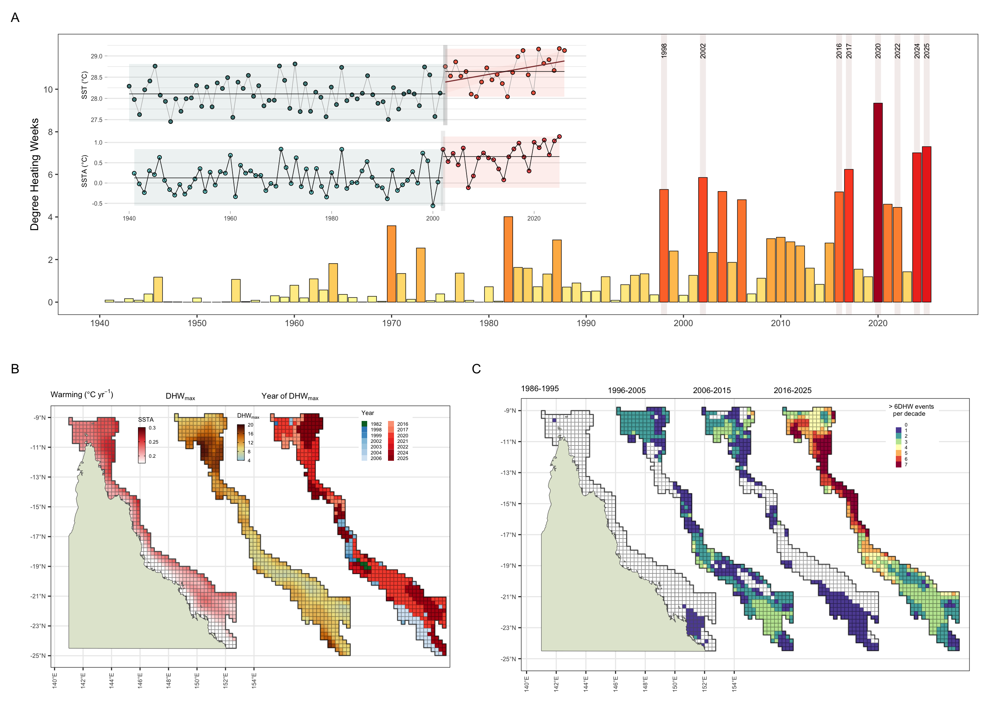
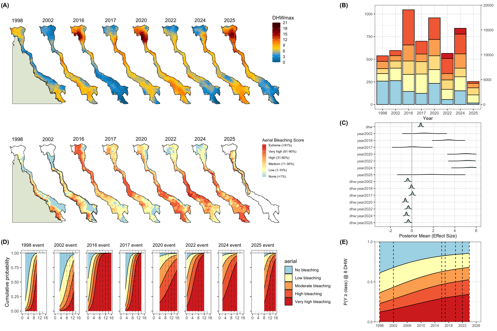
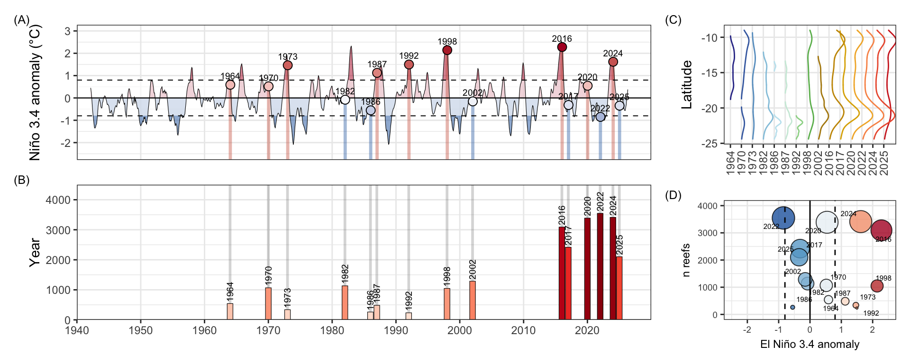
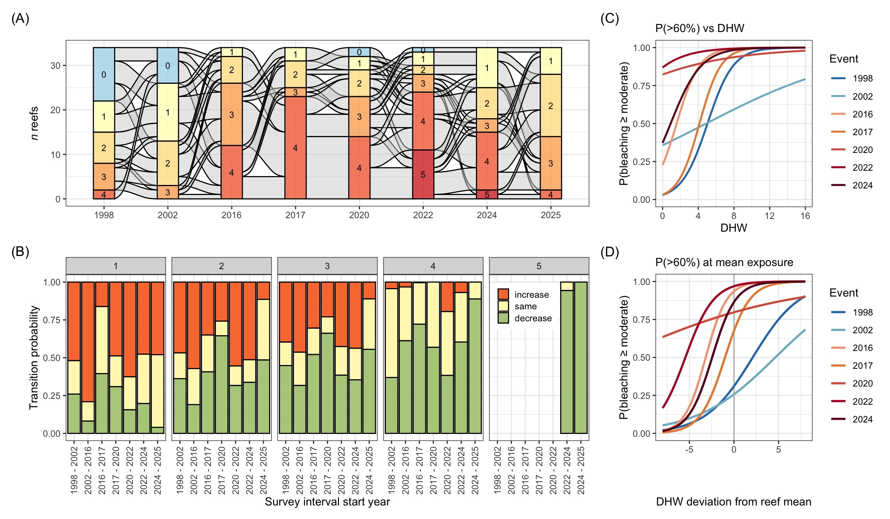

[1] TRUE
January 28, 2026
Anthropogenic warming has made marine heatwaves more frequent, intense and prolonged, and coral reefs are among the most impacted ecosystems across the globe. On the Great Barrier Reef, mass coral bleaching was unrecorded before 1998 but has since recurred with accelerating frequency, with major events in 1998, 2002, 2016, 2017, 2020, 2022, 2024 and 2025, the six most recent falling within a single decade. Whether this escalation reflects increasing thermal stress or a shift in the response of reefs to warming has been difficult to resolve in the absence of long-term consistent records of thermal stress and a correspondingly long record of biological response.
Here we draw on an exceptional record of reef-scale responses to coral bleaching: standardised aerial bleaching surveys spanning the full length of the Great Barrier Reef, comprising ~ 5,500 reef-level observations spanning 1,826 individual reefs across the eight major bleaching events of the past 28 years. Few coral-reef systems anywhere have been surveyed so consistently, at this spatial extent, over so many successive events, and the dataset uniquely allows the severity of bleaching to be tracked both across the reef and within individual reefs through repeated exposure.
Resolving long-term patterns of thermal stress is challenging, as satellite records are limited by the accuracy and consistency. To place the modern events in their full context we therefore reconstructed a continuous 85-year SST record (1940–2025) by bias-correcting the ERA5 reanalysis against observed OISST using seasonally stratified, anomaly-based quantile mapping, yielding a single homogeneous time series that reproduces the observed climatology and variability while extending four decades before OISST satellite era. This reconstruction provides a physically consistent pre-1981 baseline for the Great Barrier Reef at 1/4° spatial resolution, facilitating insight into spatiotemporal trends in SST anomalies and DHW spanning 1941-2026
Reef-wide sea-surface temperature on the Great Barrier Reef rose substantially across the 85-year reconstruction (Figure 1a). Rather than warming gradually throughout the record, the annual mean SST series is best described by an abrupt change in regime: Bayesian changepoint detection identifies a single dominant breakpoint near 1998, with no significant trend across the preceding six decades and a sustained linear increase from 1998 onward (Table S1). Betweeen 1940-200, the mean SST on the GBR existd in a fluctuating but approximately stationary thermal state (Figure 1a) before transitioning into a period of persistent warming that continues to the present.
The sea-surface temperature anomaly tracks this transition closely. Prior to 2000 the anomaly distribution sits close to zero, spanning −0.3 to +0.5 °C and fluctuating with ENSO Cycles (Figure Sx), whereas after 2000 it shifts to a persistently positive range, commonly +0.2 to +1.0 °C (Figure 1a). As with SST, the anomaly series is better characterised by a step change around 1998 than by a continuous trend (Table S1), reinforcing the interpretation of a regime shift rather than slow drift. This positive anomaly is not distributed evenly across the reef but is spatially structured: warming rates (°C yr-1) are strengthening toward the northern Great Barrier Reef and tapering southward, so that the northern sectors have warmed both earliest and fastest (Figure 1b). From a cross-shelf perspective, the outer-reef and coral sea borders are warming at a x2 rate than inshore reefs across the central and southern sectors (Figure 1b)
Accumulated thermal stress, expressed as Degree Heating Weeks, shows the same regime change as the underlying temperature. The early part of the record is dominated by near-zero DHW years interrupted only by occasional moderate spikes, indicating a reef that experienced acute heat stress rarely and at low intensity (Figure S2). From the late 1990s this pattern breaks down, and high-DHW years become both more frequent and more intense, marking a transition from episodic to recurrent thermal stress (Figure 1a). The most extreme years in the reconstruction coincide with the eight mass-bleaching events analysed here (1998, 2002, 2016, 2017, 2020, 2022, 2024, 2025), and the clustering of severe years has tightened over time, with four of the last five years ranking among the most severe in the entire 85-year record.
This intensification is also spatially organised: maximum DHW increases northward and exceeds 20 °C-weeks in the far north, mirroring the latitudinal gradient seen in the warming rate (Figure 1c). For most of the reef the single hottest year on record now falls within the last five years, with the principal exceptions confined to parts of the central and southern inshore reef where peak stress occurred earlier (Figure 1d). Aggregating the record into decades makes the acceleration explicit: the number of years exceeding 6 °C-weeks rises from one to three per decade through 1984–2015 to a sharp intensification in 2016–2025, when severe thermal-stress years became concentrated across the northern and central Great Barrier Reef (Figure 1e). Together these patterns describe a system in which damaging heat has shifted from a rare, localised occurrence to a frequent and spatially extensive feature of the modern GBR reef system.
[1] TRUE
The bleaching response has intensified across the last two decades in step with the thermal forcing. The earliest events, in 1998 and 2002, were spatially patchy and of generally low-to-moderate severity (Figure 2a). From 2016 onward, whole regions began bleaching to very high levels, in the 2016, 2017 and 2020 events. This intensified further in 2022 and 2024, which were the first events to register the highest “extreme” bleaching category (Figure 2a). The severity of recent events is unprecedented in the 85-year reconstructed record and consistent with the highest sea-surface temperatures in four centuries (Henley et al 2024).
The total bleaching impact recorded at each event expressed as both the number of reefs and the reef area per category rises steeply across the record (Fig. 2b). In 1998 and 2002 most surveyed reef area sat in the no-to-low classes, whereas the recent events are dominated by the high and very-high categories, and the extreme class appears only in the most recent events (Figure 2b). Aerial surveys indicate a clear expanding bleaching footprint, with bleaching affecting 60–90% of reef area in the most recent events (2016–2025).
Because survey extent itself varies among years, the panel reports both counts and area; on either measure the distribution shifts unambiguously toward more severe bleaching through time. As the GBR is a complex system of reefs across 2000km, we used a Bayesian spatial proportional-odds model to explore how the DHW and spatial structure of reefs drive the bleaching response across the eight events.
Modelling the response of bleaching to DHW confirms that DHW raises the probability of a reef exceeding higher bleaching categories (Figure 2c). While this was expected given the established experimental and observational data across the past four decades (references), the year effects show diverging trends across events. After accounting for thermal stress and for reef location (the spatial field and reef-level term), the year intercepts rise sharply in recent events. A large positive effect in 2016 relative to the 1998 baseline indicates a bleaching susceptibility that DHW alone cannot explain, and the high positive effects in 2022, 2024 and 2025 point to a new baseline regime in which reefs bleach more severely for a given level of heat. Critically, the DHW × year interactions are small and mixed in sign, indicating that the sensitivity of bleaching to each additional degree-week is broadly conserved across events. The mechanistic thermal-threshold response therefore appears stable, but the physiological and ecological state (i.e. energy reserves, recovery state, community composition, chronic stress) shifts the whole system with each event.
The fitted cumulative-probability curves across events show how the response to thermal dose itself has moved (Fig. 2d). For each event, the probability of occupying each ordered bleaching class is plotted across the observed DHW gradient, truncated at each event’s maximum surveyed DHW. The severe band expands progressively leftward through the record while the no-bleaching band contracts even at low thermal stress, so that very high bleaching now occurs at a markedly lower dose than in the earliest events. These results suggest that severe bleaching has become more likely at a given thermal dose not because reefs respond more steeply to each additional degree-week, but because the entire dose–response curve has shifted, mapping every level of heat to a higher bleaching probability than in earlier events. At equivalent thermal stress, reefs have become progressively more likely to bleach, representing a shift in contextual vulnerability rather than in the thermal dose (dhw~bleaching) itself.
Holding thermal dose fixed isolates this shift most directly (Fig. 2e). At a constant 8 °C-weeks of DHW, the model-estimated probability of a reef equalling or exceeding the higher bleaching classes rises steeply across the record — the probability of exceeding the very-high class increasing from roughly 0.15 in 1998 to around 0.7 in 2024. In simple terms, for an identical level of heat stress, severe bleaching has become several times more likely over the study period, indicating increasing vulnerability.
Several non-exclusive mechanisms could raise bleaching probability at fixed DHW. i) DHW does not fully capture marine-heatwave character, and recent events may carry longer duration, higher night-time minima or earlier onset than the metric reflects, ii) cumulative legacy effects are also plausible: repeated bleaching erodes coral condition, shortens recovery windows and can shift communities toward more stress-sensitive states, iii) Co-stressors — light and water clarity, low wind driving high irradiance, runoff and turbidity, or disease may further modulate the response in either direction. iv) OISST isn’t the best proxy, etc etc (but see Figure Sx)

To place the recent events in their full historical context, we applied the fitted spatial proportional-odds model to the reconstructed 1940–2025 thermal record, predicting the bleaching each reef would have experienced under the heat of every year in the reconstruction. Because the model’s year effects are estimated relative to 1998, the earliest event in the aerial record, we held the year contribution fixed at this reference level for all hindcast years. Each historical prediction therefore represents a deliberate counterfactual: the bleaching that a reef’s reconstructed thermal stress would have produced had reef sensitivity remained at its earliest-observed state, rather than at the elevated sensitivity of recent events. This isolates the contribution of thermal dose alone, before the contextual increase in vulnerability documented above, and provides a conservative baseline against which the modern era can be judged. Throughout, we summarise predicted bleaching as the number of reefs reaching high or greater severity, corresponding to more than 30% of the reef bleached.
Under this reference-sensitivity hindcast, severe bleaching was rare across the twentieth century (Fig. 3a,b). Predicted high-or-greater bleaching remained low and episodic from 1940 through the late 1990s, with even strongly positive years producing limited reef-wide impact, and no historical year approaches the extent predicted for the recent events. From 2016 onward the predicted extent rises several-fold above any earlier year, with the largest values concentrated in recent events (2016, 2020, 2022 and 2024). Mass bleaching has been variously defined (Hughes et al 2018, de Carlo 2024) as “regional” in scale”, occurring across the length of the GBR. Spatial mapping indicates that the hind cast bleaching events were largely limited in scale to local events within regions (e.g. 1964, 1986, 1992), while moderate events (e.g. 1970, 1982) span multiple regions and align closer to the definition of a “mass bleaching” footprint with low impacts, supporting earlier interpretations of mass bleaching events prior to 1998 (de Carlo 2024), albiet at a lower intensity and reduced footprint to the recent intensification. The past decade is unprecedented in impact and spatial scale, with high bleaching across a far greater footprint with progressively southward impact from the earlier northern focus (Fig. 2c). That this contrast emerges even when reef sensitivity is held at its 1998 level is notable, because it shows the escalation is driven in the first instance by the reconstructed rise in thermal stress itself; the additional increase in contextual vulnerability since 2016 acts on top of an already unprecedented thermal signal, compounding rather than causing the departure from twentieth-century climatic regime.
Severe coral bleaching has historically been associated with El Niño conditions, when the warm phase of the oscillation elevates regional sea-surface temperatures, and the higher-anomaly years in the record broadly conform to this expectation (Fig. 3d). The recent events weaken the association. Although 2016 and 2024 coincided with strong positive anomalies, the 2022 event ranked among the most severe of all eight despite occurring under the strongest La Niña anomaly in the record. Grouping events by ENSO sign, positive-anomaly and negative-anomaly events spanned almost the same severity range (0 to 5.5 and 0 to 5.2 respectively), and although positive years carried a higher median severity, per-event severity since 1998 showed no statistical association with the Niño 3.4 anomaly once thermal dose and spatial structure were accounted for (weighted regression, slope 0.48 [95% CI −1.44, 2.39], R² = 0.08). ENSO phase therefore no longer reliably separates severe events from mild ones: background ocean warming appears to have raised baseline thermal stress to the point where a strong El Niño is no longer a prerequisite for mass bleaching. The oscillation still modulates which years are hottest, but no longer determines whether severe bleaching occurs, a shift with no clear precedent in the twentieth-century record.

Previous studies have indicated thatthermal tolerance may be increasing at rates as high as 0.1 °C per decade (e.g. Lachs et al 2024), which would imply that high-frequency bleaching could be substantially mitigated under low-to-middle emissions scenarios (e.g. Bozec et al 2024). The aerial survey record offers a unique and direct test of this across the length of the Great Barrier Reef.
Tracking individual reefs through their bleaching category at each event reveals increasing severity through time (Fig. 4a). The earliest events sit predominantly in the no-to-low categories, but occupancy of the higher categories grows steadily across the record, and the most severe “extreme” category appears only from 2022 onward. By the most recent events every repeatedly surveyed reef had been impacted by bleaching, and the ribbons tracing individual transitions show that reefs rarely return to an unbleached state once the reef-wide events of 2016 begin.
Decomposing these movements into transition probabilities, conditional on a reef’s starting category, exposes an asymmetry that points to eroding recovery between events (Fig. 4b). Reefs beginning an interval in the low-to-moderate categories frequently have a high probability of increasing in severity by the next survey, so that escalation and repeat bleaching become common once a reef enters this range. Reefs beginning in the highest categories more often decrease in the following event, and extreme states are rarely sustained at the same level. We interpret this as severe bleaching is followed by mortality (e.g. xxx), leaving a community dominated by more tolerant taxa that can bleach in successive events (ref). These apparent declines therefore likely represent a state change driven by mass mortality rather than genuine recovery. Critically, the probability of further increase from a given starting state has itself risen across more recent intervals, indicating that the buffer between events is shrinking.
Expressing the fitted model as the probability of moderate-or-worse bleaching against thermal dose makes the change in response explicit (Fig. 4c). The event-specific exceedance curves shift progressively leftward through the record: where the 1998 and 2002 events required substantial DHW to reach a given bleaching probability, the recent events reach the same probability at far lower thermal stress, and the curves for 2016 onward sit well to the left of the early baseline. In simple terms, for an equivalent level of DHW, severe bleaching has become more likely over time.
Because the reefs surveyed in every event differ in their average thermal exposure, this shift could in theory reflect the underlying spatial pattern rather than a change in the reefs over time. Decomposing DHW into a between-reef component (each reef’s mean exposure) and a within-reef component (the deviation of each event from that mean) isolates the change occurring within individual reefs at a common chronic exposure (Fig. 4d). Even after this correction, the event curves retain their temporal ordering: at a reef experiencing its own typical DHW, the probability of moderate-or-worse bleaching rises across the record, with the recent events sitting above the early baseline. Because this contrast is identified entirely within reefs, it cannot be attributed to differences in survey composition among years, and it provides the strongest evidence that the rise in bleaching propensity reflects a genuine change in how individual reefs respond to heat.
Taken together, these results are inconsistent with an emergent, reef-wide increase in thermal tolerance on the Great Barrier Reef and give significant cause for concern. The strong re-allocation of reefs into the moderate-to-extreme categories in later years implies a system increasingly poised near its thresholds, where a smaller additional stress can compound to trigger higher categories. Responses vary considerably among reefs in that some repeatedly escalate while others decline, consistent with thermal refugia, oceanographic buffering, or among-reef differences in community composition mediating thermal sensitivity. Given the marked interannual variability in the dose–response (Fig. 2b), future events may yet behave differently, but the GBR-wide trajectory to date offers no support for tolerance keeping pace with warming.

The data show no evidence of adaptive thermal tolerance keeping pace with warming on the GBR, while models indicate contextual vulnerability is rising, not falling, which removes a key assumption underpinning optimistic recovery projections.
Severe bleaching now occurs at thermal doses that produced only mild bleaching two decades ago, meaning existing DHW-based management thresholds (e.g. bleaching watch/warning tiers) may understate biological risk and warrant recalibration.
The shrinking recovery interval between events implies that management strategies premised on reefs recovering between disturbances are increasingly unsafe; intervention timing should assume compounding rather than independent events.
Rising contextual vulnerability means emissions trajectories, not local management alone, set the ceiling on reef futures: local interventions can buy time but cannot offset a systemic upward shift in the dose–response.
Restoration and intervention (assisted gene flow, larval seeding, shading) should be evaluated against a moving baseline of rising vulnerability, not a static one; success metrics calibrated to historical conditions risk overstating gains.
Among-reef heterogeneity in response points to refugia identification and protection as a defensible near-term priority, while acknowledging refugia themselves are a shrinking and time-limited asset.
Monitoring investment should preserve and extend long repeat-survey time series, since the within-reef signal (not one-off spatial snapshots) distinguishes genuine vulnerability change from sampling artefact.
The loss of the Great Barrier Reef is unlikely to arrive as a single catastrophic event. Reefs differ markedly in their response, and those with high larval supply or in thermal refugia can rebound strongly after individual bleaching events, sustaining a patchwork of recovery across the system.
The greater risk is cumulative. As events recur on shortening intervals, a growing fraction of reefs fail to fully recover between disturbances, and this incomplete recovery compounds: degraded reefs seed fewer larvae and re-bleach from a lower baseline, eroding the capacity of the wider system to recover from the events that follow. The trajectory is therefore better understood as a ratchet than a cliff, with each event lowering the ceiling for the next.
Against this backdrop, the policy response remains misaligned with the scale of the driver. Local interventions such as restoration and water-quality improvement, although well funded, act on stressors that are secondary to temperature and cannot offset a systemic upward shift in bleaching vulnerability driven by warming. Meanwhile, 11 new coal mine projects have been approved in Queensland since the onset of recurrent mass bleaching in 2016, representing approximately 121 Mt CO₂-e of direct lifetime emissions, resulting in at least ~1.8 Gt CO₂-e of lifetime coal-use emissions.
The central finding of this study, that reefs are becoming more likely to bleach at any given level of heat, underscores that the future of the reef will be determined principally by the rate of global decarbonisation, and that mitigation at the scale of the driver cannot be substituted by intervention at the scale of the symptom.